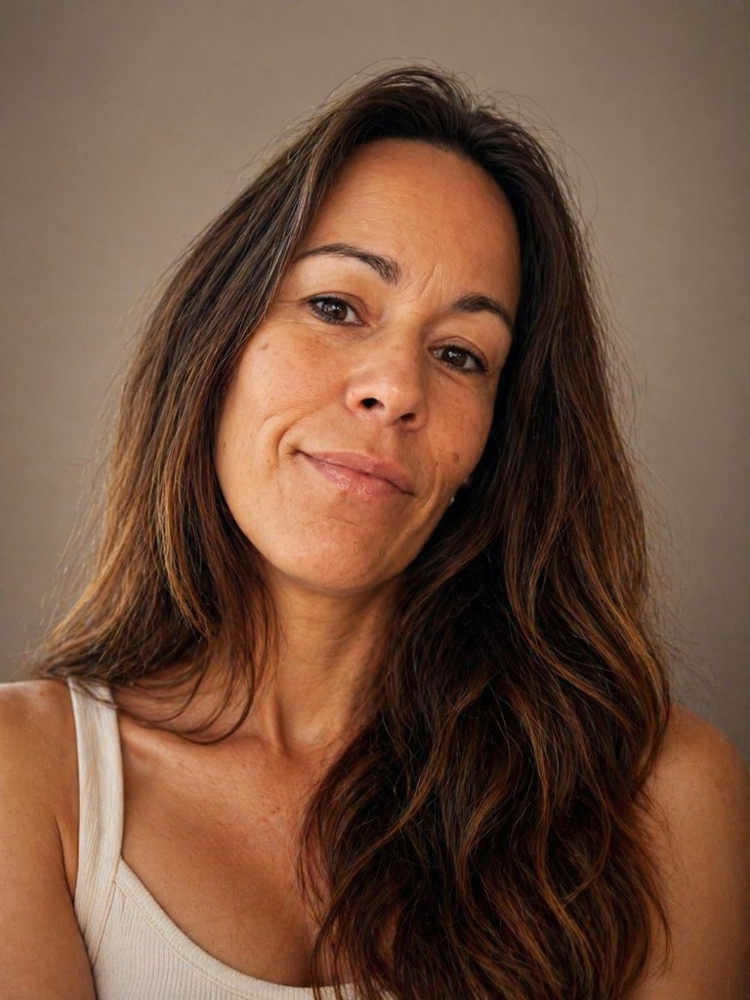

Autora de contenidos educativos • Directora de centro • Maestra • Periodista
Especializada en diseño curricular, innovación educativa y elaboración de recursos didácticos de alta calidad para Educación Primaria. Funcionaria de carrera con visión integral del proceso editorial.

Como funcionaria de carrera en activo y directora de centro, aporto un conocimiento real y actualizado del día a día en el aula de Educación Primaria, las necesidades de los alumnos y las demandas del profesorado.
Mi formación como licenciada en Periodismo me otorga destrezas avanzadas de redacción, síntesis, claridad comunicativa y rigor en el desarrollo de manuales escolares y contenidos didácticos escritos.
Experta en el diseño de situaciones de aprendizaje originales, adaptaciones autonómicas y recursos didácticos totalmente alineados con los marcos curriculares vigentes y metodologías activas.
"La combinación de experiencia docente en activo, liderazgo educativo, formación periodística y trayectoria en creación de materiales curriculares permite aportar una visión integral del proceso editorial: desde el conocimiento del aula y del currículo hasta la redacción, adaptación y revisión de contenidos pedagógicos de alta calidad."
Proyectos destacados y colaboraciones clave en la creación de materiales educativos curriculares y recursos didácticos.
Coautora del proyecto de Lengua Castellana. Desarrollo completo de contenidos curriculares, diseño didáctico y redacción de unidades adaptadas a la etapa de Educación Primaria.
Coautora del proyecto integral de esta serie de libros escolares. Elaboración de contenidos educativos orientados al desarrollo de competencias y situaciones de aprendizaje motivadoras para el alumnado.
Desarrollo completo de programaciones didácticas curriculares, solucionarios y adaptaciones autonómicas para asegurar la adecuación de proyectos editoriales a las normativas de las diversas comunidades.
Creadora de recursos digitales interactivos para Primaria. Especialización en la adaptación de materiales educativos a Lectura Fácil, promoviendo la accesibilidad cognitiva en el aula.
Diseño de situaciones de aprendizaje y recursos didácticos alineados estrechamente con la ley LOMLOE. Tareas de revisión pedagógica y adecuación curricular de contenidos educativos diversos.
Elaboración de programaciones didácticas completas y desarrollo de situaciones de aprendizaje originales enfocadas a las oposiciones del cuerpo de maestros en la Comunidad Valenciana.
Creación de contenido original para libros de texto de Lengua Castellana dirigidos a la etapa de Educación Primaria.
Diseño y elaboración de actividades interactivas y digitales de Lengua Castellana y Matemáticas.
Elaboración de solucionarios didácticos y guías metodológicas de soporte para el cuerpo docente.
Creación y adaptación de manuales curriculares y recursos educativos en formatos de fácil comprensión lectora.
Diseño de dinámicas de aprendizaje competenciales alineadas con el nuevo marco curricular estatal.
Revisión pedagógica sistemática, adecuación curricular y propuesta de mejoras para materiales editoriales.
Liderazgo organizativo y pedagógico del centro educativo, coordinación y dinamización de equipos docentes y dirección de proyectos pedagógicos innovadores.
Docente en la etapa de Educación Primaria, tareas de tutoría y desarrollo activo de proyectos de innovación educativa en centros públicos.
Diseño e impartición de temarios de oposiciones, corrección personalizada de supuestos prácticos y asesoramiento pedagógico a futuros docentes.
Valoración técnica y pedagógica de proyectos de movilidad y cooperación educativa en el ámbito europeo.
Formación y asesoramiento técnico y pedagógico en competencias digitales educativas para el profesorado.
Universidad Católica de Valencia
Universidad de Valencia
Universidad CEU Cardenal Herrera
Capacitación para la Enseñanza de Lenguas Extranjeras, Universidad Politécnica de Valencia
Residencia de tres años en Francia con inmersión cultural y lingüística completa.
Residencia de dos años en Italia con inmersión lingüística completa.
Si buscas una autora con experiencia en aula, criterio de redacción y amplio conocimiento del currículo escolar LOMLOE, ponte en contacto.
Comunidad Valenciana, España